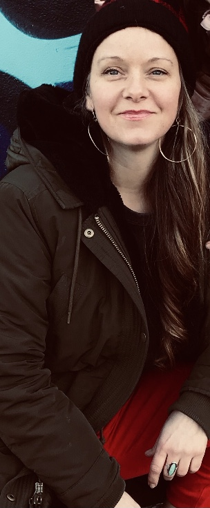

My Portfolio
Brit Wallace
Email me
connect on GitHub
My Portfolio
Here is a list of some of my most recent projects.
-
This first project is called Pet-webpage. It showcases some simple HTML and CSS. This page celebrates the neighbors. His name is Fries.
Check it out here!
-
This next project was a fun group project called Animal-Shelter. We used HTML and CSS. We built this webpage in the VsCode text editor. We were putting our new knowlege of building rows and columns to use.
Check it out here
-
Lastly, I worked on another collaborative project called Cupcake-Shop. We also used HTMl and CSS. We were running with some newly learned styles like Flashy.
Check it out here
Class="center-top"
About me